Sewer network intelligence
The whole network. Understood.
Live operations, infiltration and inflow, pump stations and calibrated hydraulic models, all on one validated record.
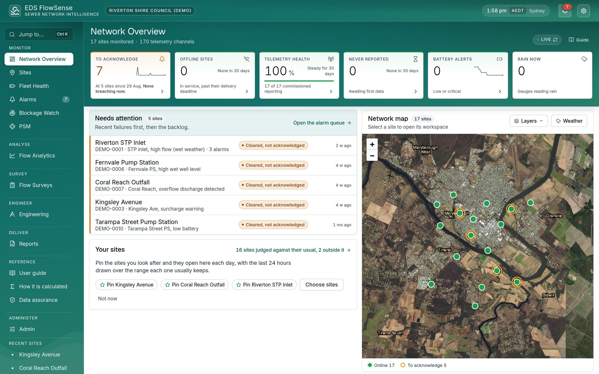
- 60srefresh rate across the whole network
- 5ways to connect your SCADA, with nothing installed on it
- 8blockage signatures, six of them from a level reading alone
- 16engineering tools on one GIS canvas, by project and scenario
Three products in one, and one record underneath them.
Each layer is normally bought separately, from a different supplier, with a spreadsheet in between. In FlowSense they share one database, one set of units and one timeline. The number in the board paper and the reading in the chamber are the same number, and you can trace one to the other without leaving the browser.
Monitor
Live fleet status, site detail, alarms, telemetry and battery health, rainfall context, and early warning of blockages weeks before a pipe surcharges.
Replaces the logger vendor’s portalAnalyse
Rainfall derived infiltration and inflow in kilolitres, dry weather flow profiled, depth and velocity hydraulics, catchment flow balance and data quality scores.
Replaces spreadsheets and manual I&I studiesEngineer
Project workspaces for calibrated rainfall response (RTK) models, a dynamic wave network model, the I/I heat map, and the cost per kilolitre of infiltration removed.
Replaces a modelling consultancy engagementMonitor
Every site, every minute. Worst first.
The Overview opens with the sites that need attention, listed beside a map that shows where they are. Point at a row and its site is ringed on the map. Filter the map by what is wrong, then click through to the site.
- Six figures across the topFive open their own list. Alarms to acknowledge are kept apart from any still breaching.
- Since you last lookedOne line on what changed since your last visit: alarms raised, blockage warnings, sites gone quiet.
- Needs attention, worst firstOne row per site with its reason: alarms newest first, then recent failures, then the backlog.
- Where it isEvery site on aerial imagery, ringed amber while an alarm waits and red while one is breaching. Rain radar is one click away.
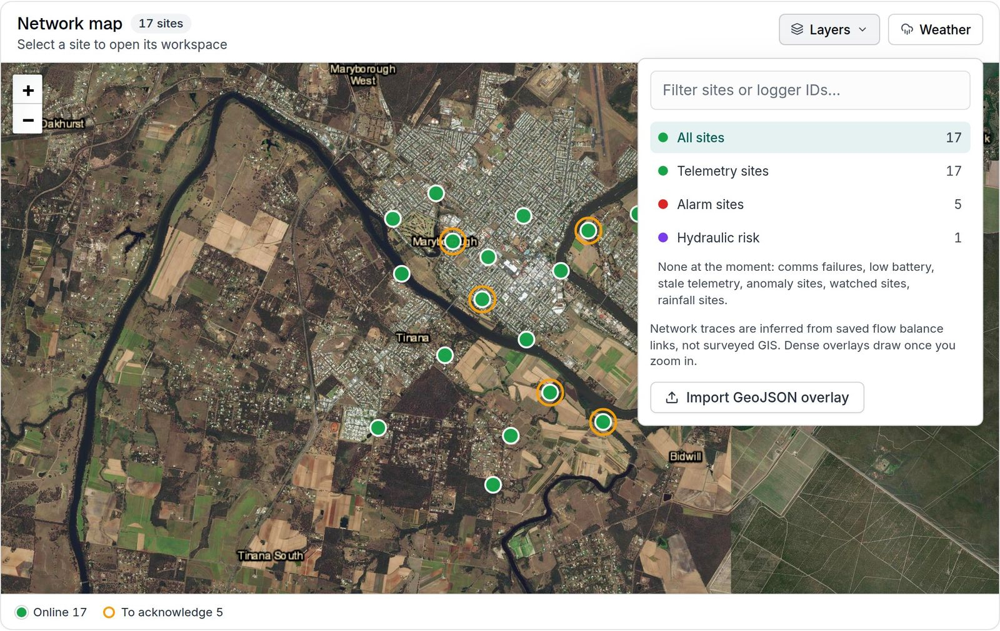
Every site, judged against its own usual.
The Sites list, each site’s page and the sites you pin to the Overview compare the latest hour with that site’s usual pattern, learned from its own record for that day and time. They say plainly when a site is running above or below it.
- Small departures stay quietA move of less than 10% is not called out, so the list is not a wall of amber.
- No reading, no verdictA site whose newest reading is more than a day old gets no verdict rather than a guess.
- Weather is not a faultRain in the last day is shown beside the verdict, so a rise after rain is never read as a problem.
- Every channel, not only flowThe list shows whatever a site measures: pH, conductivity, rain, gas, pump runs, power.
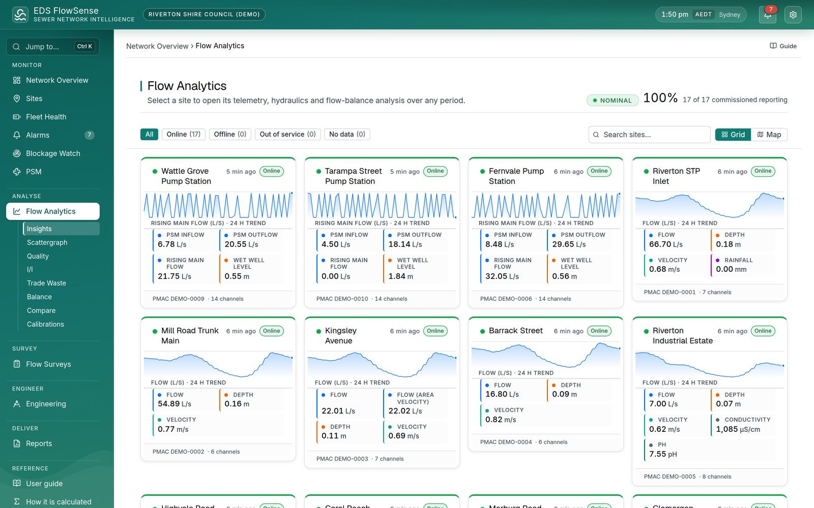
Whatever the site measures, in the form that suits it.
A gravity sewer, a pump station, a trade waste discharge and an overflow chamber each open on one page, laid out for what that site carries: levels, flows, pump runs, pH, conductivity, rain, power. Every chart zooms, pans and exports, and its window travels in the link you send a colleague.
- A tile for each measurementSet against this time yesterday, with the daily volume, the hours it is based on, and the logger.
- Pumps read as statesA pump shows how long and how often it ran, never as an average.
- Any window on one time axisEach measurement has its own pane, with pump runs and alarms drawn as lanes on the same axis.
- Honest about gapsEvery trace breaks where the logger went quiet, rather than drawing across the gap.
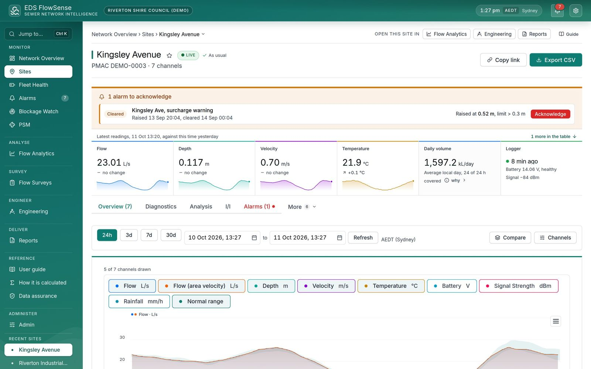
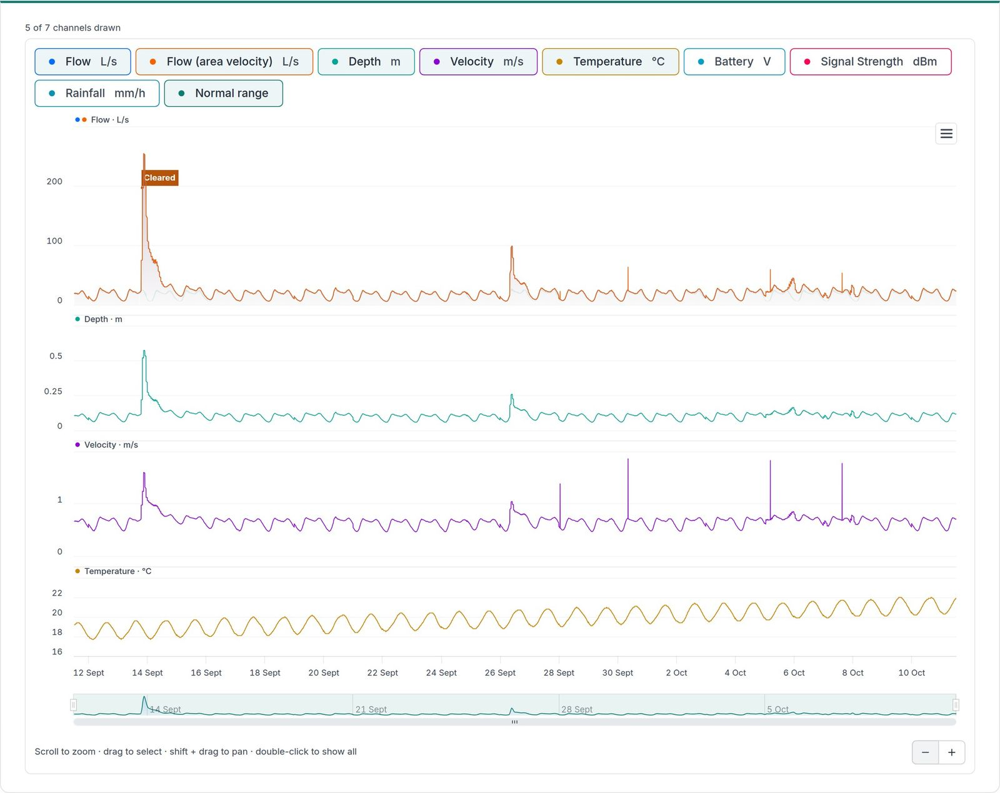
The failing logger, named before it goes quiet.
A monitoring program fails quietly. A battery flattens, a modem stops answering, and the quarter’s report is already wrong. FlowSense watches the fleet itself, and puts what needs attention first.
- A replace-by date for every batteryProjected from the site’s own discharge trend and battery chemistry. A dying logger becomes a planned visit.
- Late, judged site by siteOffline means a site missed its own delivery deadline, so a twice daily logger is never reported late at hour three.
- Alarms that reach a personThreshold, no data and pump condition rules send email and SMS once, when the state changes. They go to people, not to addresses.
- Monday, in the inboxEach reader gets a summary of their own network, waiting at the start of the week.
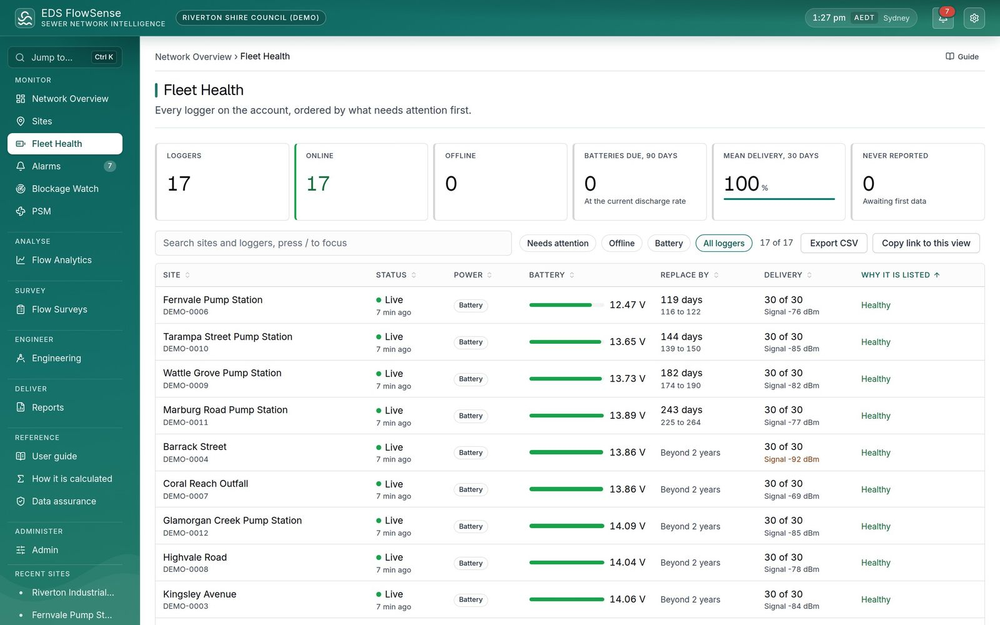
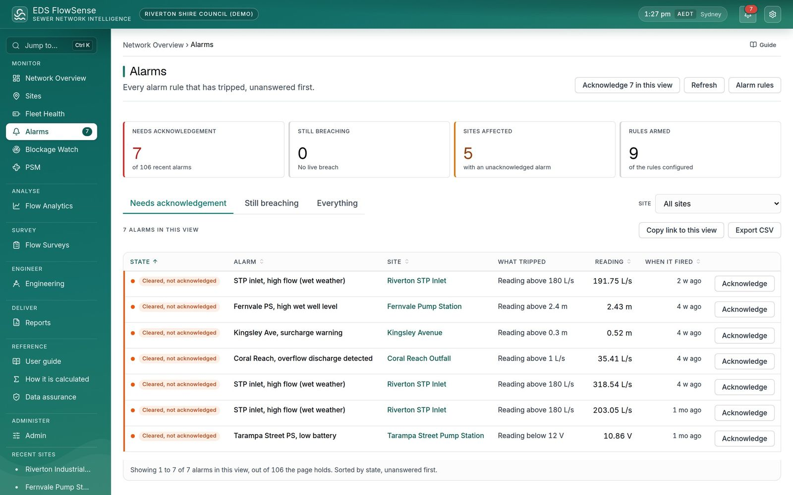
Blockages found in dry weather, weeks before they overflow.
A sewer drains almost empty overnight, and an obstruction shows in that trough long before anyone rings the council. Blockage Watch reads it twice a day, sets rain aside, and runs on every gravity sewer you monitor without being asked.
- A decision, rankedWhat needs a decision first, with its case number, then the sites behaving normally.
- The call that saves a crewThe level is up because more water is arriving: increased load, not an obstruction. No jetting.
- The numbers behind itOvernight level and its trend, the headroom left in the pipe, evidence strength and dry days judged.
- Tested on your own historyA one click backtest replays the detector against the overflows already in your register. The hit rate you see is yours.
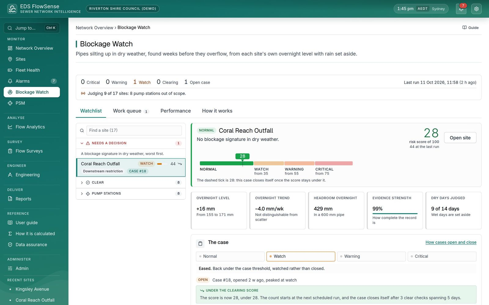
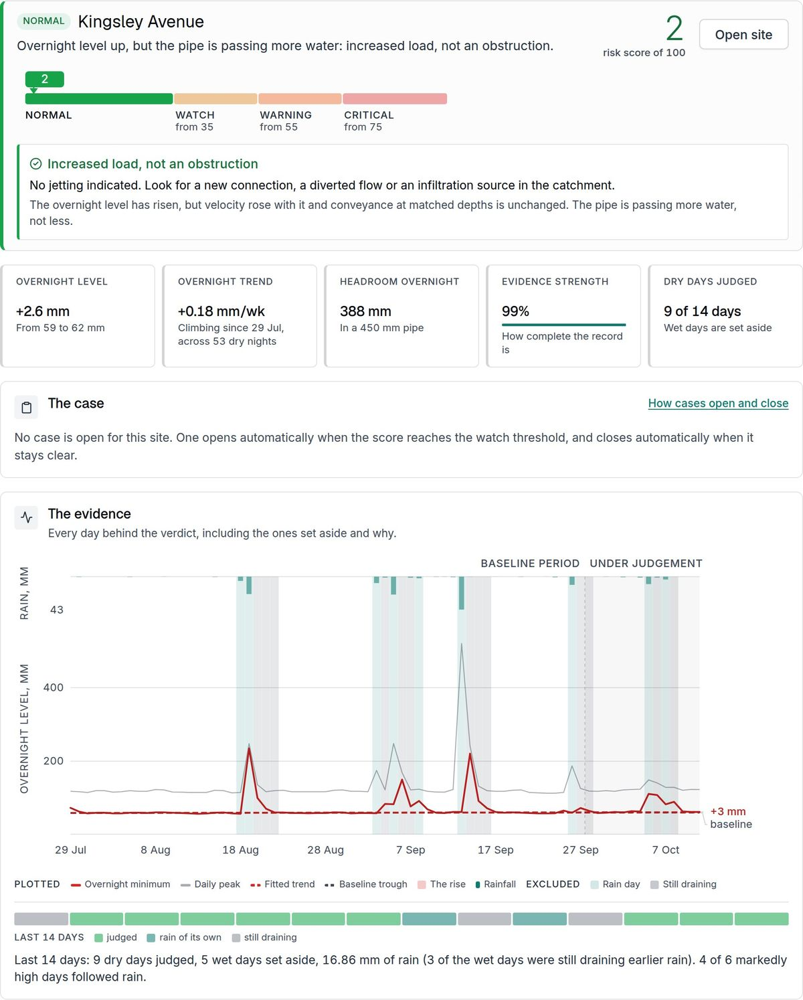
Pump Station Manager
Station flow from the pumps you already run. No flow meter.
A wet well fills as sewage arrives and empties as the pumps move it. So its level, the pump run states and its size make a flow record. EDS has built PSM on that since 1991, and it is one of the most popular tools in FlowSense.
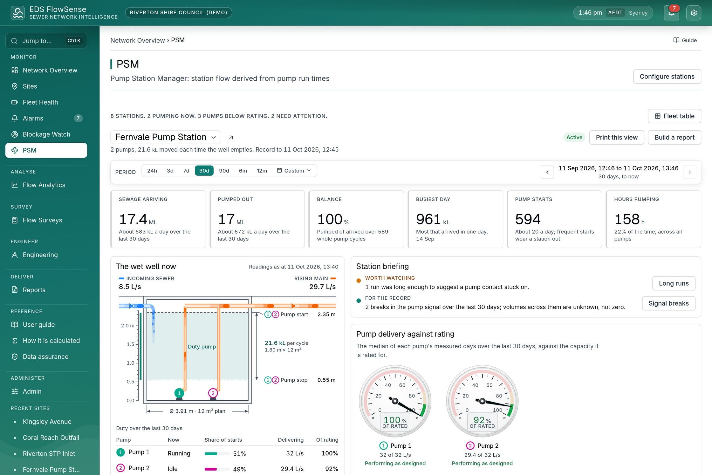
- 1The station’s figures first
What arrived, what was pumped out, and the balance of the two over whole pump cycles.
- 2The wet well, in kilolitres
An engineer’s section of the well, with its start and stop levels and the volume each cycle moves.
- 3A briefing, in words
What is worth watching and what is for the record, each with a button to its evidence.
- 4Pump condition, with a date
Each pump against its rating, a warning when its output slips, and remaining useful life as a range.
- Station flow without a flow meterArriving flow at every timestamp from the wet well level, plus volume pumped, starts and run hours, with the well itself in kilolitres. No chamber work, no meter to buy, no confined space entry.
- Pump delivery measured, not ratedEach pump’s delivery is the median of its measured days, set against its nameplate or its own first month. Pumps sharing a rising main are never judged against their ratings added up, since together they deliver less.
- Pump condition, with the time each pump has leftOn dry days each pump’s output is held against its own reference. A slow decline, a sudden drop and a stopped pump each raise a finding and an alarm, and remaining useful life is given as a range to ISO 13381-1.
What it needs from you is small: the wet well level signal, pump run states as numbers, and the well dimensions. Most stations already produce the first two, which is why this is usually the cheapest flow data an authority can add.
Analyse
Infiltration and inflow, in kilolitres.
“This catchment is wet” is not a business case. A volume, a peak, a lag and a percentage over dry weather flow is. FlowSense separates the storm from the sewage beneath it and reports what the difference is worth, per catchment and per storm.
- A baseline that movesDry weather flow from qualifying dry days only, split by day type, so a weekend or a wet winter is never charged to the storm.
- The three way splitSanitary flow, groundwater infiltration and rainfall derived inflow, summing exactly to the metered total.
- Catchment closureUpstream against downstream, aligned on travel time, so you know how much of the flow is accounted for.
- A price on the waterVolumes priced at your own treatment and pumping rates, carried into the capital plan unchanged.
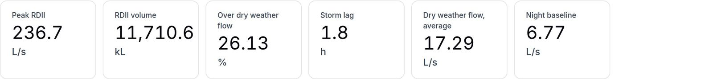
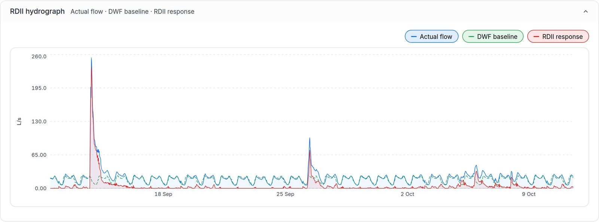
Check the instrument before you trust the number.
Every figure on this page rests on the record being sound. So FlowSense scores the record first, names the weak channel, and shows its working when it repairs anything.
- Depth against velocityEvery depth and velocity pair over the window, coloured by flow. Silt, surcharge, backwater and a failing meter each leave a different shape.
- Three scores, named for what they scoreOperator health, telemetry and anomalies, with each channel’s completeness and gaps listed rather than averaged away.
- The full QARTOD test batteryGross range, climatology, spikes, rate of change, flatlines and cross channel residuals, each with a recommended repair.
- Repairs never overwrite a readingFilled gaps live only in the analysis and the export. The reading the instrument produced is always there to go back to.
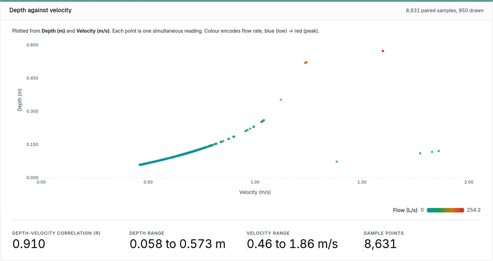
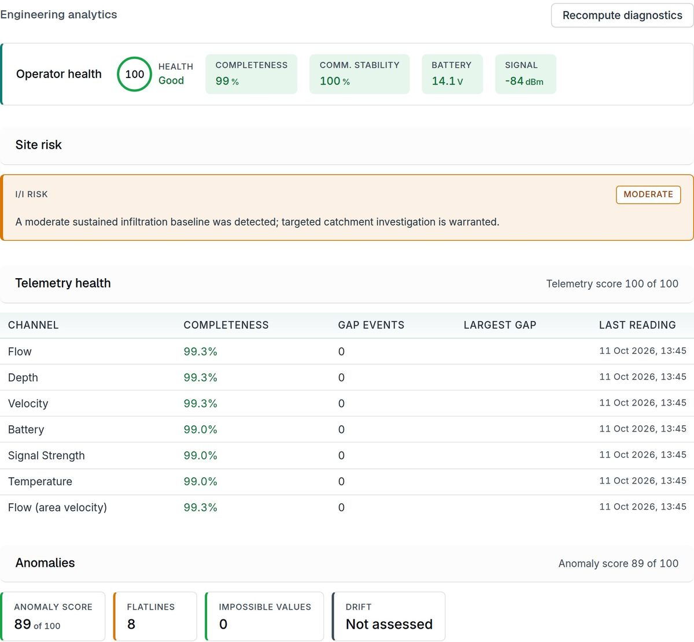
Engineer
Severity painted onto the real network.
FlowSense attributes infiltration and inflow along the gravity network, by catchment and flow direction, and gives each estimate its confidence. The result is a ranked list of the pipes worth sending a camera down.
- Six methodsYou choose the method, and the platform says where your data cannot support it.
- Along the pipesSeverity follows the way the sewer drains, not a circle drawn round a meter.
- Confidence, 0 to 1Pipes far from a gauge fade, rather than pretend to a number.
- Your GIS, as suppliedThe council’s sewer layer loads from the file it came in, and the map exports as an A4 report.
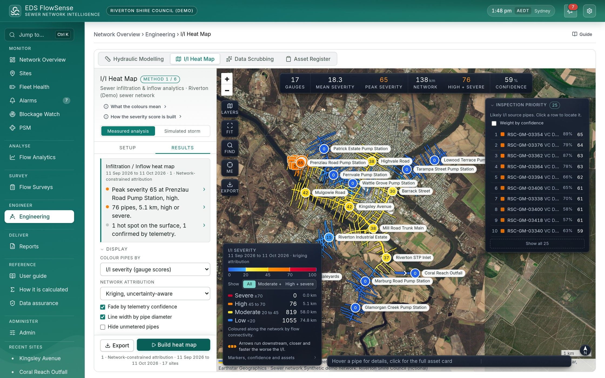
A calibrated model you keep, not a report you file.
FlowSense runs calibration, validation and a dynamic wave network model as a project your engineers keep. When the question comes back next year, you run it again instead of commissioning it again.
- Every storm scored on its ownSimulated peak within 15% below to 25% above observed, and event volume within 10% below to 20% above, to the CIWEM Code of Practice.
- Honest about its own ceilingObserved inflow carries the baseline’s noise, so the workspace shows the best score available on the record beside the score achieved.
- Dynamic wave hydraulicsPipes, pumps, gates and control rules, run from the network’s own dry weather state and exported to EPA SWMM 5.
- The capital planOptions ranked by net present value, benefit cost ratio and cost per kilolitre removed.
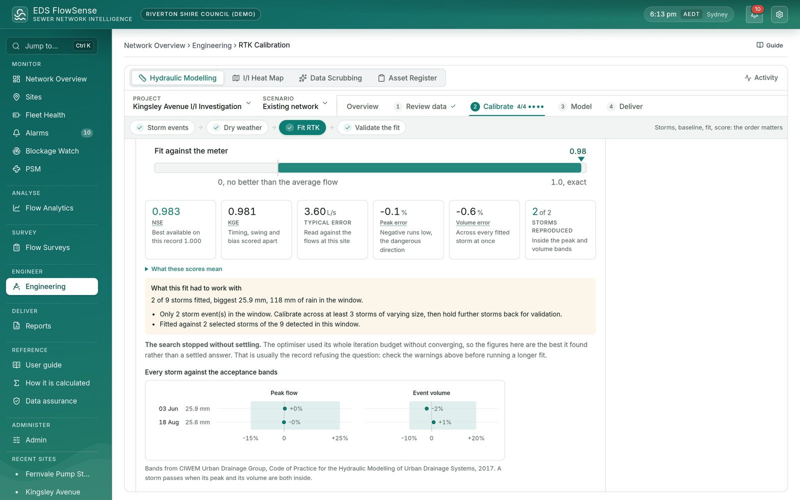
Deliver
The board paper, from the record your operators use.
Seven templates, each written for a different reader and generated from the same validated record, under your logo. The quarterly pack stops being a fortnight of copying charts.
- A template for every readerExecutive summary, flow totals, flow analysis, engineering diagnostic, site investigation, network performance, and pump stations.
- Context, not just totalsEach period is set against five other windows, including the same weeks last year.
- In the inbox, by the calendarDaily, weekly or monthly by email, each over whole days, so one issue compares with the last.
- Feeds on a scheduleCSV by SFTP or FTPS, CSV or JSON by MQTT, with run history. A failed send never skips a window.
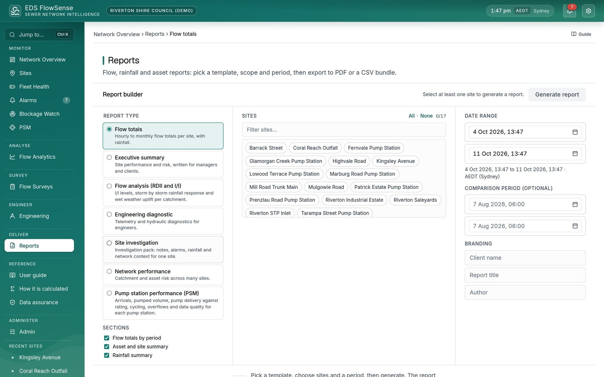
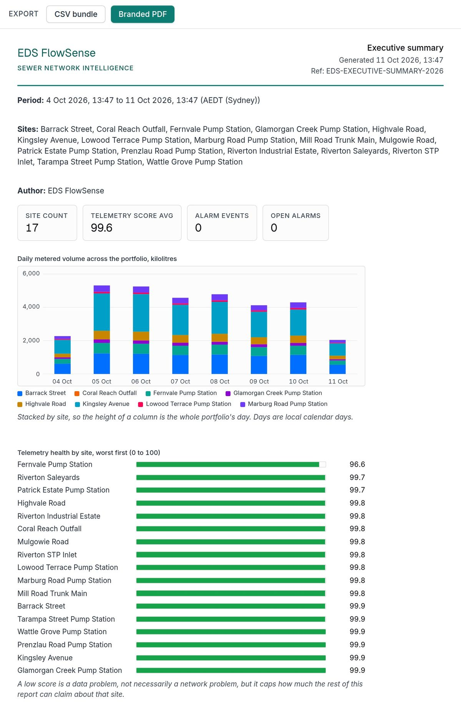
The office and the manhole see the same thing.
Your account works on a phone, with nothing to install and no second licence. What the crew finds sits beside the data it explains, where next year’s engineer will find it.
- Notes with photographsObservation, maintenance and calibration notes, with photos and video from the phone in the crew’s pocket.
- Surveys that write the paperworkThe pre-installation survey fills in the inspection report, manhole diagram included.
- A link for the contractorA single use link with no login opens one job and nothing else. What they find comes back as a field note, photographs attached.
- The instrument’s historyZero checks, reference readings and meter comparisons kept against the site, for the year somebody asks.
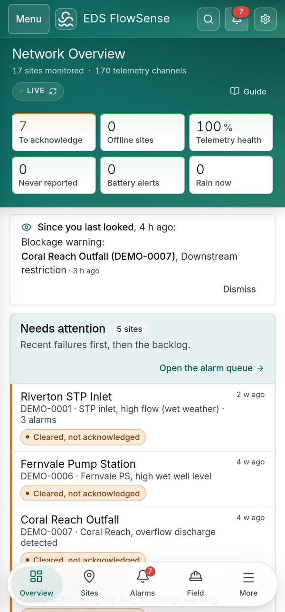
Bring the fleet you own and the SCADA you run.
Nothing here asks you to replace an instrument or start your record again. Several logger brands, two SCADA systems and a decade of spreadsheets land in one account and read as one network.
In
- Your loggers, collected by EDS, from several manufacturers
- Your SCADA sends, by HTTPS push or MQTT, with nothing installed on it
- We read your system by API, on a schedule
- We collect your files from your SFTP or FTPS server
- You drop files into an SFTP folder we host for you
- Reviewed CSV import, staged and checked before it lands
One validated record
- Field time kept, never the time it was collected
- Duplicates dropped, so anything can be safely re-sent
- All or nothing: no half loaded day, ever
- Unknown tags wait for a person to map them, not a guess
Out
- Back to your SCADA, on a schedule
- CSV by SFTP or FTPS, CSV or JSON by MQTT
- A read API and signed webhooks, for your historian or BI stack
- Model exports: EPA SWMM 5, GeoJSON, Excel
- Branded reports, PDF and CSV, under your name
- Everything, on exit: your record leaves with you
Commissioned with you. We set up every connection with your IT or SCADA people, using documents written for them. A connection is not done until a reading has arrived and been checked.
Eight things you won’t find together anywhere else.
No other platform sold in Australia carries a reading the whole way, from the chamber to the capital plan, on one record and in one subscription. Each of these answers a question an authority is asked every year.
- One record, end to end
The reading in the chamber and the figure in the board paper are the same number, never retyped.
- Blockages read from the pipe
Eight dry weather signatures that name the mechanism and the action, backtested on your own overflows.
- Flow from every pump station
Station inflow and pump condition from the level and run signals you already have.
- Infiltration that adds up
Sanitary, groundwater and rainfall derived flow, summing exactly to the metered total.
- Models you keep
Storm by storm calibration, a dynamic wave network and a costed plan, in one workspace.
- Data both ways
Your SCADA in five ways, and the validated record back out to it.
- Every number shows its working
“How this is calculated” on the figures that matter, naming the method and the standard.
- A price on the page
Per site, everything included, unlimited users, and no editions to choose between.
Built to the published standards, and tested against them.
Each calculation in FlowSense cites the standard it follows, in the product, where your reviewer can read it. The list is generated from the running software, so a standard nothing implements cannot appear on it, and conformance is held by tests against the code rather than asserted once.
- CIWEM UDG Code of Practice (2017)
Per-storm calibration acceptance bands, and dry weather flow as a daily pattern for each type of day.
- WEF MOP FD-6 and WPCF MOP No. 36
Dry weather flow as sanitary flow plus groundwater infiltration, from qualifying dry days only.
- WSA 02 Sewerage Code of Australia
Self-cleansing velocity, level of service checks, and Colebrook-White friction for each pipe.
- AR&R 2019 and AS/NZS 3500.3
Areal reduction factors, design rainfall temporal patterns, and the Rational Method for ungauged subcatchments.
- QARTOD
The quality control tests and flag vocabulary used to score each record before it is trusted.
- EPA SWMM
Dynamic wave routing, and the three-component RTK method for rainfall-derived infiltration and inflow.
- ISO 13381-1
A pump’s remaining useful life, counted down to a stated limit and given with its uncertainty.
- NSW Liquid Trade Waste Guidelines (2021)
Trade waste charges: the annual fee, usage, excess mass and pH charges, on a trade waste account.
- Hosted in SydneyDigitalOcean’s Sydney region, backed up nightly.
- Encrypted in transitCurrent TLS, with strict transport security.
- Two-factor sign-inTime based codes, to RFC 6238, which EDS can require by role.
- Access down to the channelRoles, pages, sites and channels, set by you.
- A full audit trailWho signed in, viewed, changed and exported, kept for at least a year.
- Tokens that only writeA leaked token cannot read a stored value.
The instruments EDS supplies carry certification in their own right. The Detectronic LIDoTT range is MCERTS certified for flow metering and rated ATEX and IECEx Zone 0 for hazardous atmospheres, and a certified meter keeps its certification when its readings arrive in FlowSense, which stores the field time and the raw value it produced.
FlowSense is built to these standards and tested against them on every release. EDS does not describe the software as certified, accredited or endorsed by the bodies that publish them.
Since 1991, EDS has measured water and wastewater for
Logos are of organisations EDS has supplied, monitored or worked for since 1991. They are the trademarks of their owners and do not indicate use of FlowSense.
What councils and utilities ask us.
If your question is not here, our team will answer it on 1300 721 683.
Who owns the data?
You do. Data exports in open formats with no export fee, and if you cancel at renewal, your data exports with you in full.
Do we need to install anything?
No. FlowSense runs in the browser on desktop, tablet and phone. Connecting your SCADA needs no agent, connector or gateway on your systems, and FlowSense has no control path into them.
Does it only work with EDS instruments?
No. FlowSense is vendor independent. Alongside the instruments EDS installs, it can collect from your own loggers, or take data from your SCADA by HTTPS, MQTT, API, SFTP or FTPS.
Where is the data hosted, and how is it secured?
In Australia, in DigitalOcean’s Sydney region. Sign-in supports two-factor codes, access is set per person down to individual sites and channels, and every sign-in, view, change and export is recorded in an audit trail.
Can the data go back into our SCADA or historian?
Yes. As scheduled CSV files over SFTP or FTPS, as MQTT messages to your broker, through a read API, and as signed webhooks when an alarm is raised or cleared, a forecast puts a site at risk, or Blockage Watch flags a blockage.
How many people can use it?
Unlimited users, with role based access and administration that can be delegated to your own team.
What does Blockage Watch not do?
It is a statistical early warning read from each sensor’s own history. It says the pipe reaching that sensor is behaving differently for a reason rain does not explain. It does not locate the obstruction and cannot see one downstream of the meter.
How do we get started?
Ask us for a walkthrough using your own sites. We will demonstrate FlowSense live and show you the working behind every number on the screen.
Read more about FlowSense.
- Platform overviewThe short introduction: what FlowSense does, from the instrument in the pipe to the board paper. PDF.
- Platform brochureThe whole platform at a glance, in sixteen pages: the screens, the standards it follows and the pricing. PDF.
- Detailed brochureThe longer read: each screen explained, how Blockage Watch and the Pump Station Manager reach a verdict, and the pricing terms in full. PDF.
- Platform datasheetThe technical reference: every way data gets in and out, the engineering tools, the standards and where the boundaries sit. PDF.
- Features and benefitsWhat FlowSense does to monitor, analyse and engineer a sewer network. PDF.
- The value caseMonitoring, modelling, alerting and the infiltration study in one subscription, priced against what the market publishes. PDF.
- Competitive brochureWhy depth and velocity together matter, and how FlowSense compares with ADS, StormHarvester and Kallipr. PDF.
- Connecting your SCADAThe five ways readings get in, with ports and setup. For engineering, control systems and IT teams. PDF.
- Sending data to your SCADAThe four standing feeds back out to your SCADA, historian or reporting tools. PDF.
- Industry paper: One Platform, Many SourcesThe case for bringing every logger brand and your SCADA data onto one platform, with the savings costed. PDF.
See it on your own network.
Book a live demonstration on your own sites, and bring your hardest question about how a figure was calculated. We will show you the working behind every number on the screen.